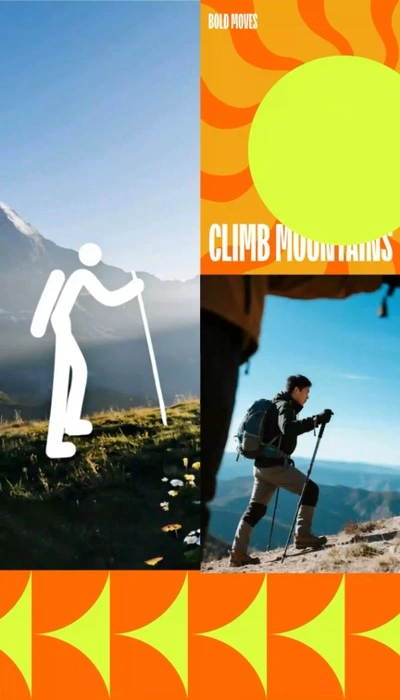

户外新势力
天猫千星计划 · 品牌闭门会邀请函 / 2025

MOTION INVITATION
一封邀请，串联户外场景
以千星符号连接骑行、游泳、跑步与登山，将运动场景串成一封完整的品牌闭门会邀请函。
- 视觉
- 千星符号 × 四种运动场景
- 交付
- 动态邀请函 / 六张系列页面
邀请函 · 完整系列
从主题封面进入运动场景，最后呈现会议的时间、地点与邀请信息。
千星符号 · 视觉规则
以统一的图形和配色连接不同运动，保持系列识别。
天猫千星计划 · 品牌闭门会邀请函 / 2025

MOTION INVITATION
以千星符号连接骑行、游泳、跑步与登山，将运动场景串成一封完整的品牌闭门会邀请函。
从主题封面进入运动场景，最后呈现会议的时间、地点与邀请信息。
以统一的图形和配色连接不同运动，保持系列识别。